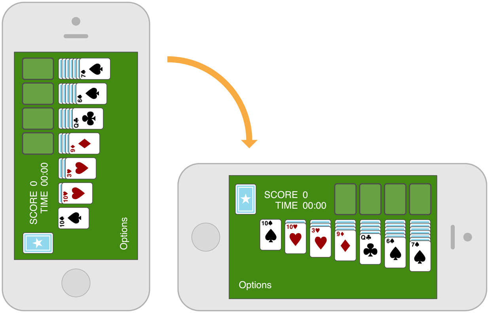

Integrating with iOS means giving users a compelling, delightful experience that feels at home on the platform; it doesn’t mean creating an app that looks like a copy of a built-in app.
The best way to integrate your unique app with the platform is to understand the themes that motivate iOS—these are described in Designing for iOS 7—and figure out how your app should express them. As you do this, follow the guidelines in this section to help you give users the experience they expect.
Use Standard UI Elements Correctly
As much as possible, it’s a good idea to use the standard UI elements that UIKit provides. When you use standard elements instead of creating custom ones, both you and your users benefit:
Standard UI elements automatically receive updates if iOS introduces a redesigned appearance—custom elements don’t get updated.
Standard UI elements tend to offer various ways to customize their appearance or behavior. For example, all views (that is, objects that inherit from UIView) are tintable, which makes it easy to add color to an app. To learn more about adding color to UI elements, see “Using Tint Color” in iOS 7 UI Transition Guide.
People are comfortable with the standard UI elements, so they instantly understand how to use them in your app.
To take advantage of the benefits of using standard UI elements, it’s crucial that you:
Follow the guidelines for every UI element. When a UI element looks and works the way people expect it to, they can depend on their prior experience to help them use it in your app. You can find UI element guidelines in Bars, Content Views, Controls, and Temporary Views.
Don’t mix UI element styles from different versions of iOS. You don’t want to confuse users by displaying UI elements that look like they belong in a different version of iOS than the version that’s currently running on the device.
In general, avoid creating a custom UI element that performs a standard action. First, ask yourself why you’re creating a custom UI element that behaves exactly like a standard one. If you just want a custom look, consider changing the look of a standard element by using the UIKit appearance customization APIs or tint color. If you want a slightly different behavior, be sure to find out whether a standard element might do what you want when you adjust its properties and attributes. If you need completely custom behavior, it’s best to design a custom element that doesn’t look too similar to the standard ones.
Don’t use system-defined buttons and icons to mean something else. iOS provides many buttons and icons that you can use in your app. Be sure you understand the documented, semantic meaning of these buttons and icons; don’t rely on your interpretation of their appearance. (You can find the meaning of each icon in Toolbar and Navigation Bar Buttons and Tab Bar Icons.)
If you can’t find a system provided button or icon that has the appropriate meaning for a function in your app, you can create your own. For some guidelines to help you design custom icons, see Bar Button Icons.
If your app enables an immersive task or experience, it may be reasonable to create completely custom controls. This is because you’re creating a unique environment, and discovering how to control that environment is an experience users expect in such apps.
Respond to Changes in Device Orientation
People generally expect to use their iOS devices in any orientation, so it’s best when your app responds appropriately.
Maintain focus on the primary content in all orientations. This is your highest priority. People use your app to view and interact with the content they care about. Changing the focus when the device rotates can disorient people and make them feel they’ve lost control over the app.
In general, run in all orientations. People expect to use your app in different orientations, and it’s best when you can fulfill that expectation. iPad users, in particular, expect to use your app in whichever orientation they’re currently holding their device. But some apps need to run in portrait only or in landscape only. If it’s essential that your app run in only one orientation, you should:
Launch your app in the supported orientation, regardless of the current device orientation. For example, if a game or media-viewing app runs in landscape only, it’s appropriate to launch the app in landscape, even if the device is currently in portrait. This way, if people start the app while the device is in portrait, they know to rotate the device to landscape to view the content.

Avoid displaying a UI element that tells people to rotate the device. Running in the supported orientation clearly tells people to rotate the device, if required, without adding unnecessary clutter to the UI.
Support both variants of an orientation. For example, if an app runs only in landscape, people should be able to use it whether they’re holding the device with the Home button on the right or on the left. And if people rotate the device 180 degrees while using the app, it’s best if the app responds by rotating its content 180 degrees.
If your app interprets changes in device orientation as user input, handle rotation in app-specific ways. For example, a game that lets people move game pieces by rotating the device can’t respond to device rotation by rotating the screen. In a case like this, you should launch in both variants of the required orientation and allow people to switch between the variants until they start the main task of the app. As soon as people begin the main task, begin responding to device movement in app-specific ways.
On iPhone, anticipate users’ needs when you respond to a change in device orientation. Users often rotate their devices to landscape orientation because they want to “see more.” If you respond by merely scaling up the content, you fail to meet users’ expectations. Instead, respond by rewrapping lines of text and—if necessary—adjusting the layout of the UI so that more content fits on the screen.
On iPad, strive to satisfy users’ expectations by supporting all orientations. The iPad screen mitigates people’s desire to rotate the device to landscape to “see more.” And because people don’t pay much attention to the minimal frame of the device or the location of the Home button, they don’t tend to view the device as having a default orientation.
Follow these guidelines as you design how your iPad app should provide a great experience in all orientations:
Consider changing how you display auxiliary information or functionality. While keeping the most important content always in focus, you can respond to rotation by changing the way you provide secondary content.
For example, an iPad game that displays a rectangular game board in landscape orientation needs to redraw the board to fit well in portrait orientation. Instead of vertically stretching the game board in portrait orientation—or leaving empty space above or below it—the game could display supplemental information or objects in the additional space.
Avoid gratuitous changes in layout. A comparable experience in all orientations allows people to maintain their usage patterns when they rotate the device. For example, if your iPad app displays images in a grid while in landscape, it’s not necessary to display the same information in a list while in portrait (although you might adjust the dimensions of the grid).
As much as possible, avoid reformatting information and rewrapping text on rotation. Strive to maintain a similar format in all orientations. If people are reading text in an app, it’s especially important to help them keep their place when they rotate the device.
If some reformatting is unavoidable, use animation to help people track the changes. For example, if you add or remove a column of text in different orientations, you can hide the movement of columns and simply fade in the new arrangement. To help you design appropriate rotation behavior, think about how you’d expect your content to behave if you were physically interacting with it in the real world.
Provide a unique launch image for each orientation. When each orientation has a unique launch image, people experience a smooth app start regardless of the current device orientation. The iPad Home screen supports all orientations, so people are likely to start your app in the same orientation in which they used the previous app.
Downplay File and Document Handling
iOS apps can help people create and manipulate files, but this doesn’t mean that people should have to think about the file system on an iOS device.
There is no iOS app analogous to the OS X Finder, and people shouldn’t be asked to interact with files as they do on a computer. In particular, people shouldn’t be faced with anything that encourages them to think about file metadata or locations, such as:
An open or save dialog that exposes a file hierarchy
Information about the permissions status of files
As much as possible, let people manage documents without opening iTunes on their computer. Consider using iCloud to help users access their content on all of their devices. For some tips on how to provide a great iCloud experience in your app, see iCloud.
If your app helps people create and edit documents, it’s appropriate to provide some sort of document picker that lets them open an existing document or create a new one. Ideally, such a document picker:
Is highly graphical. People should be able to easily identify the document they want by looking at visual representations of the documents onscreen.
Lets people make the fewest possible gestures to do what they want. For example, people might scroll horizontally through a carousel or grid of existing documents and open the desired one with a tap.
Includes a new document function. Instead of making people go somewhere else to create a new document, a document picker can allow them to tap a placeholder image to create a new document.
Give people confidence that their work is always preserved unless they explicitly cancel or delete it. If your app helps people create and edit documents, don’t require them to take an explicit save action. iOS apps should take responsibility for saving people’s input, both periodically and when they open a different document or switch away from the app.
If the main function of your app isn’t content creation—but you allow people to switch between viewing information and editing it—it can make sense to ask them to save their changes. In this scenario, it often works well to provide an Edit button in the view that displays the information. When people tap the Edit button, replace it with a Save button and add a Cancel button. The transformation of the Edit button helps remind people that they’re in an editing mode and might need to save changes, and the Cancel button gives them the opportunity to exit without saving their changes.
Be Configurable If Necessary
Some apps might need to give users a way to make setup or configuration choices, but most apps can avoid or delay doing this. Successful apps work well for most people right away and offer some ways to adjust the user experience within the main UI.
If possible, avoid sending users to Settings. It’s important to remember that users can’t open the Settings app without first switching away from your app, and you don’t want to encourage this action.
When you design your app to function the way most of your users expect, you decrease the need for settings. If you need information about the user, query the system for it instead of asking users to provide it. If you decide you must provide app settings that users rarely need to change, see “The Settings Bundle” in iOS App Programming Guide to learn how to support them in your code.
If necessary, let users set behaviors they want within your app. Integrating configuration options into your app lets you react dynamically to changes because people don’t have to leave your app to set them.
As much as possible, offer configuration options in the main UI. Putting options in the main UI can make sense if they represent a primary task and if people might want to change them frequently. If people are likely to change an app’s configuration only occasionally, it makes sense to put them in a separate view.
Take Advantage of iOS Technologies
iOS provides a wealth of technologies that support common tasks and scenarios in ways that users expect. This expectation means that it’s almost always better to integrate system-supported technologies into your app than it is to design a custom approach.
Some iOS technologies—such as Multitasking and VoiceOver—are system features that all apps should incorporate. Others enable specific app functionality, such as handling tickets and gift cards (Passbook), enabling user purchases within an app (In-App Purchase), displaying in-app advertising (iAd Rich Media Ads), integrating with Game Center, and supporting iCloud.